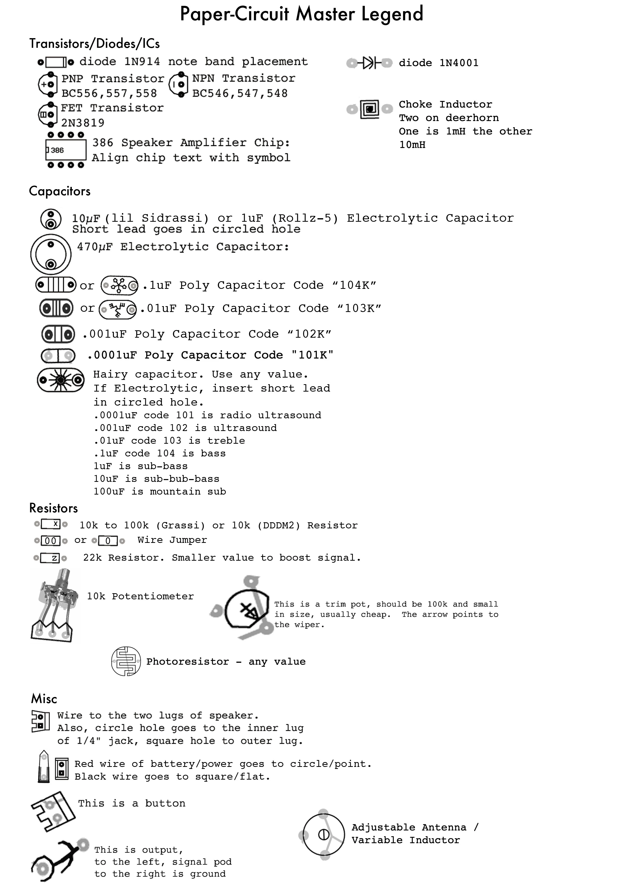
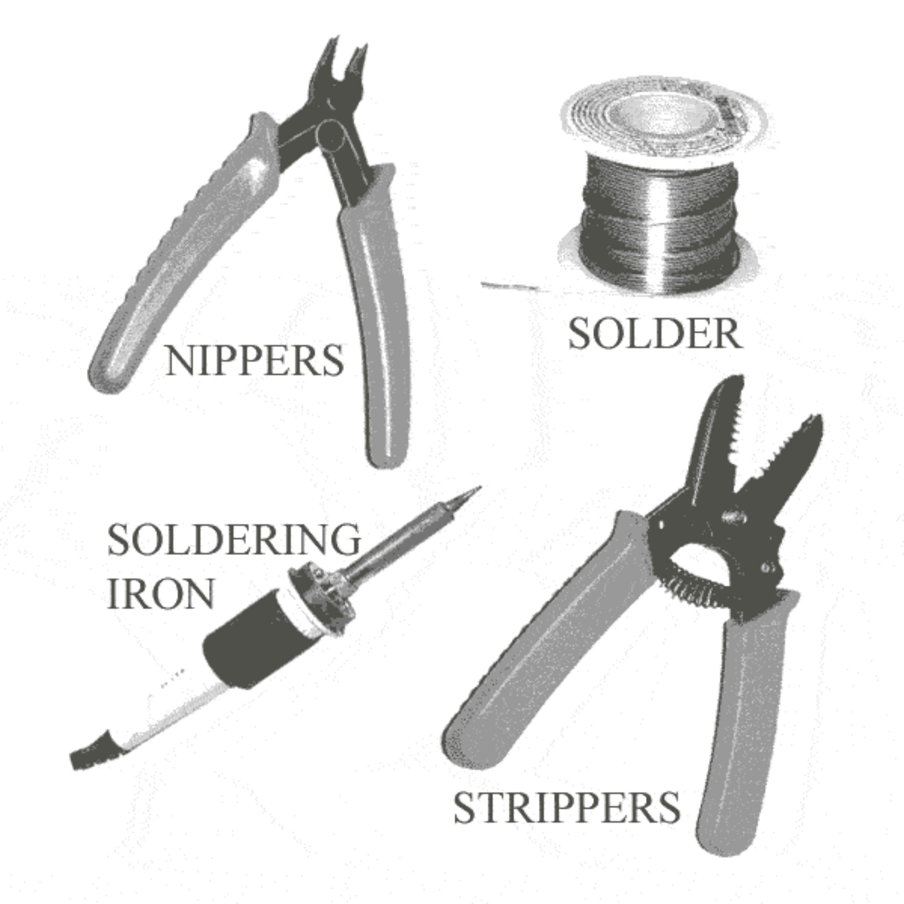
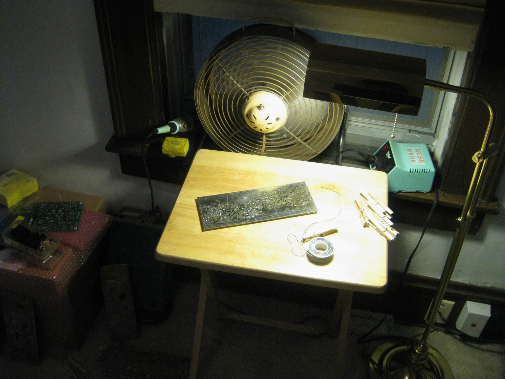
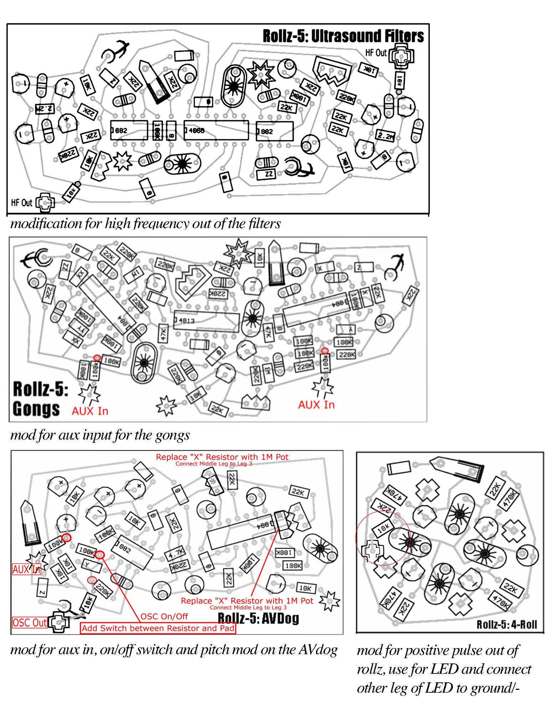
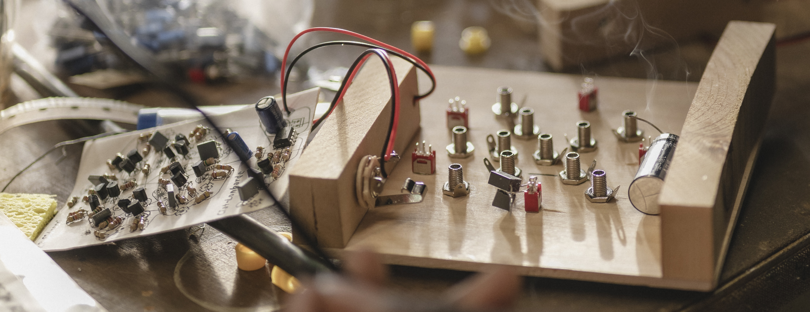
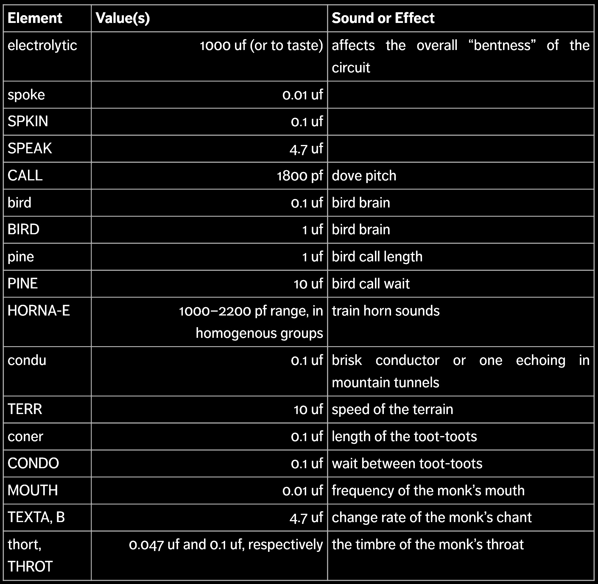
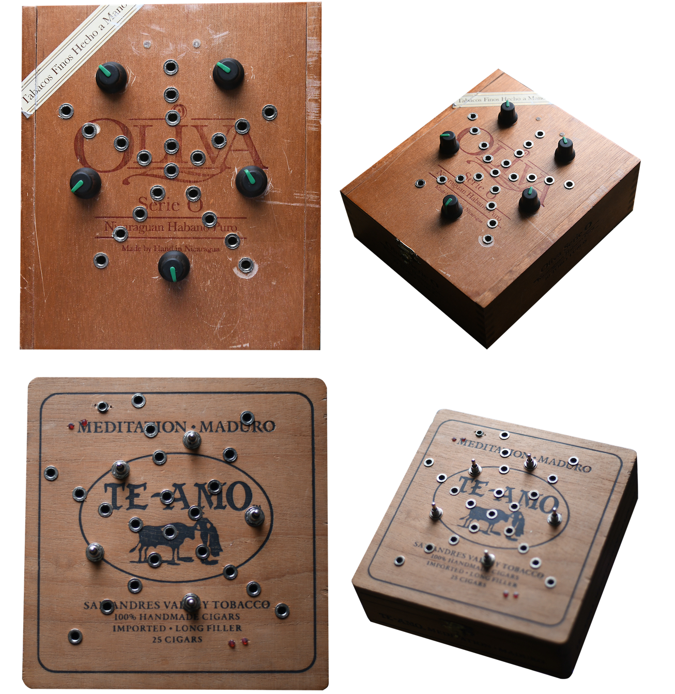

{kind=link}
{kind=link}
{kind=link}
{kind=link}
{kind=link}
{kind=link}

This is a guide to the wonderful world of Ciat Lonbarde DIY. Ciat Lonbarde is a store at the mall for esoteric gesture and drama machines made from locally and internationally sources wood. Peter Blasser is the designer at this store, making some of his synthesizer instrument designs open source and easy to build, using paper circuits. Paper circuits are circuit layouts that can be printed on regular printer paper, folded in half, and stuffed with components, to be soldered on the other side of the paper. These paper cirtuits make it extremly accessable for DIYers to dive into the world of Ciat Lonbarde by making their own mix and mash of the synth, drum, drama and gesture modules. Because Peter's site is taking on a new look, a lot of these designs are no longer archived in an easy accessable way, so i have made this page to guide you in building these. I have also converted, with mostly the help of Josh as CrucFX, most of these papers into Gerber files that can be uploaded to a site such as JLC PCB, so you can purchase the fiberglass, if you are anti-paper.
Ciat Lonbarde DIY Workshop @ Sonic Acts Biennial 2026
The most popular of the Ciat Lonbarde DIY Builds is the Rollz-5 Drum machine, which is made up of 4 section. The Rollz are the pulse, feedback and rynthm section, the Gongs are the drum, the Auto-VDogs (AVDogs) are the drama, and the ultrasound filters reveal ultrasonic frequeinces from what passes through them.
Peter uses a unique language to represent components on his circuit boards. A lot of the paper or pcb layouts have symbols on them that represent different electronics compoents. These symbols are demystified with Peters Master Golden Legend below. Refer to this legend to identify all symbols. Notis: A resistor labeled "0" is zero ohms, a piece of wire or scrap lead. When chaining power oblisks together (point to point and square to square) you can replace the diodes on the other boards with a jumper scrap lead, the first board in the chain must have a diode.

Here's what you need along with the papers and gerbers for the Rollz-5 (Upload Gerbers as ZIP to JLC PCB to order) Download the image and print it on normal 8.5x11 inch paper, play around with margins vs no margins for the correct sizing. I have had luck on my printer with no margins.:


There are many modifications people have done to circuits to add inputs, outputs, cv and voltage to drive components such as LEDs, some of these work and some dont, but give them all a try! Play around with the pot values, and double ganged vs single gang pots.


Lil Sidrassi Paper Circuit
Pretty Paper Rolls: Experiments in Woven Circuit
Peter Blasser
ABSTRACT
A history of my efforts to design sustainable and economical circuit construction on paper, more akin to craft than industry. The focus is a collection of modules called “Rollz-5”, which creates organic rhythms out of geometrical forms. A future direction is to create electronic sound devices based on the platonic solids and other 3-D topographies.
PAPER CIRCUITS
In 2006 I began making circuits on paper. Paper circuits are easier, cheaper, and environmentally safer than the alternative- greenboards etched with heavy chemicals at a factory. The idea, which I got from a St. Louis collective known as “commonsound”, puts front (component) face and back (trace) face adjacent and mirrored on the paper. The pattern is cut out, folded in the middle, then pierced with a needle. The components are inserted and their leads woven and soldered according to the trace pattern. I created several pocket-size paper circuits that explore touchability and the complexity of circular modulations. I play them by intuitively wiring or touching nodes to each other to create different re-weavings of the internal circuits. I consider these the most accessible of my designs; anyone can salvage or buy the components after downloading the plans from my website (www.ciat-lonbarde.net). Each build of a paper circuit is unique, because the time elements vary by changing values in key locations. The transcription of electronic ideas onto paper stimulates a free and open distribution of craft, where the final pieces vary based on the skills of the maker. This appeals to an ideal of medieval individuality, where information is distributed personally through guilds as well as mnemonically in spellbooks and mandalas. The paper circuit projects attempt to bring the art of electronics from an impersonal, industrial approach to one which is individual and magical. This crafty use of electronics encourages everyone who pursues it to personally reduce waste; creativity leads to resourcefulness and vice versa.
ROLLZ-5
After creating several standalone pieces, I decided to design a group of paper circuits that combine in diverse ways as an assemblage. I intended to confront the notion of “drum machine”, which implies the sterile regimentation of time, and transform it into a collection of organic flows generated by geometrical forms. These forms and their accompanying filters can be switched, wired, or touched; the final manifestations range from a small preset switch-box, a squeezable spike-dome, or a traditional modular. My first implementation uses five slim walnut panels, connected by heavy cloth-wire, which I hang on the wall to play and fold up to store (figure 1). I exposed the nodes on the surface as inlaid brass pegs, for alligator clips to grasp.
The top two panels contain the pulse-brain circuitry- the geometrical forms that I call rolls. They are three, four, five, and six-noded versions of the same simple transistor circuit (figure 2). They cycle impulses, inverting polarity at each node; imagine a pulse oscillator flipping at a set frequency. From this humble base whole montages can be built by connecting nodes to nodes on other rolls (figure 3). I abstract the rolls as polygons; a square is a four-noded roll as a pentagon is five-noded. Connections can contain a resistance which softly melds two nodes together; a connection without resistance creates a new monad node. During experiments with the rolls, I found an interesting difference between even and odd ones. Take a 6-roll (figure 4). The lozenges surrounding it represent the temporary state of each node, where white is inverse of black. Start on a black node and follow the arrows- the impulse ends as it started. The even rolls are stable and alone they maintain a certain periodicity. Now look at the 5-roll (figure 5). Start on the star and follow the impulse around- when you arrive on the start node now it is inverted. Odd rolls exhibit a “paradox spiral”; in attempting to resolve their states, they transcend periodicity and go into a sort of high-frequency chaotic trance. The combination of even and odd lead to rich experiments in pulse and periodic fuzz-burst.
Meditating on the oscillographs of my experiments, I realized I should design filters, or translators, to bring the odd ultrasound/radio blurps into audible range as well as work with the low frequency even pulses. The bottom three panels of my Rollz-5 (figure 1) each contain four of a kind of translator. For simplicity’s sake, I allowed one input node and one control knob for each translator. By abstracting the most important feature into one control, learning and controlling it is easy. On the first translator, an “Ultrasound Filter”, the knob sets the cutoff frequency around which ultrasounds are reflected down to audible range. It uses a switched capacitor filter, which has a (happy) side-effect of heterodyning high frequency sound by its reference tone. In figure 6, the top trace shows mostly odd-roll chaotic ultrasound, and the bottom shows a translation. It sounds like an old-time radio as it sweeps through stations; there are audible difference tones swooping up and down. This translator also filters the timbre of the even pulses.
The second translator type is called “Gongs”. It works with even pulse material, waiting a period set by the control knob, then pulsing a resonant filter preset to a certain pitch and damping. Normally I would desire moveable pitches, but I reconciled with set pitches because this is a drum machine- The tones mark phrases around which melodies develop externally, and I would rather control the phrase length than the tone of the gong. Anyhow, a creative hacker could easily mod these circuits to make the pitches moveable. Figure 7 shows an even pulse rhythm on top, and a gong translation on the bottom. The sonic effect is anything from a short woodblock tone to a long deep resonant gong, synchronized at short or long periods.
The final translator type is called “Auto VDog”, which uses the same resonant filter as Gongs, but at a very low frequency, to transform pulses into a slow undulation. This undulation controls the amplitude of a simple drone tone, to make a ghostly complement to the pulse material. Figure 8 shows the raw pulses on top, and the translation on bottom. I created this translator to balance with the plucked and pulsed sounds. It’s like sending pulses through a watery wave-tank which speaks a simple tone, a complement to the more abrupt rhythms of the other translators, yet it relates periodically because it is based on the same raw material.
TOUR, FUTURES
On a recent tour of the US, the Rollz-5 served as the organic ostinato on top of which we humans improvised gestural voice, trombone, flutes, and strings. The Rollz-5 freed us to work on the more human elements of the jam, while keeping a limp, or pleng, to the rhythm to keep it interesting. Pleng is a Javanese Gamelan term describing tones an octave apart but slightly detuned, to create shimmering difference tones. This term is appropriate to any analog circuit really, because minute variations in components that would ideally match create long difference tones. These difference tones add variety to the phrasing in a truly organic way. In Sarasota, after performing, I was approached by a student named Marcus Aurelius to whom I gave a copy of the instructions to build the Rollz-5. His enthusiasm jumped when he saw the geometrical forms and he told me, “dude, this is sacred geometry!”. Seeing that I needed clarification, he gave us a book by Drunvalo Melchizedek about the history of the “Flower of Life” [1]. This hexagonal arrangement of circles or spheres leads to a perfect diagram of all five of the platonic solids- tetrahedron, octahedron, icosahedron, cube, and dodecahedron. I then realized that the geometry of the Rollz-5 is two dimensional, and it could be further elaborated into three dimensions. Figure 9 shows a future experiment involving an electronic dodecahedron, a conductive glove, and a translator box. How to translate is still vague, but one obvious idea is to heterodyne the signal by that from another ball-glove, or forsake gloves entirely and convert the balls into chaotic radio transmitters, received and heterodyned by the translator. I would make the ball from paper circuit panels, soldered together and tethered by a power cord, then covered with papier-mache to protect unintended nodes from exposure. The concept could explore the regular platonic solids, as well as multiplex forms such as buckminster fullerines, and mutant topographies made out of irregular polygons. This is not a drum machine but a 3-dimensional manipulation of chaotic fields. Where will sound go after all the timbres and tones have been discovered? This 3-dimensional manipulation is one possibility- it provides a complicated topography translated from vortices and crystallizations into “normal” timbres and back out again into ultrasound chaos.
BIOGRAPHY
Peter Blasser lives in Baltimore, MD, where he designs and builds electronic sound devices for fun and profit. He also does landscaping, low brass, and cooking. www.ciat-lonbarde.net
REFERENCE
1. Melchizedek, Drunvalo. The Ancient Secret of the Flower of Life, Volume 1 (Flagstaff, AZ: Light Technology Publishing, 1990)
There are many other paper ciruits designed by Peter Blasser. Here are some of the other ones:
"the nobsrine is an electronic musical instrument designed for babies. It uses just two knobs, and an "on" switch to accomplish a wide range of simple, classic electronic sounds. It does this by "sampling" the knob at each turn, and also using the energy of the turn to control the amplitude of two plus two triangle oscillators. It is for babies of DJs and noise musicians, who want to introduce their children to strange sounds, chaos magic, the idea of infinite degrees of relationship between tones, without the more complicated techniques involved in uper crust CIAT INSTRUMENTS."
"In anticipation of Ieaskul F. Mobenthey releasing the Fourses modules for Eurorack, here are paper circuits to construct three different kinds of this module. It is based on an olde olde concept that you may know from Ciat-Lonbarde in the kittennettik days."
Peter and Daniel Fishkin design solar sounders (solar powered synthesizers!) Read about Peter's designs Here and Daniel's Here! These circuits are meant to be used with 9v 3w solar panels and 3w speakers, however 12v solar panels, 2 6v solar panels in series, and some lower wattage 9v panels have also worked.


When I first started making these builds, cigar boxes were easy, cheap and sturdy solutions for enclosures. I have then learned woodworking and majorly upgraded my boxmaking skills, and if you are final boss level, the cutting board style glueup panel is the way! Super glue in your LEDs or make a window using masking tape (for frosty) or packing tape (for smooth) and expoxy resin. "Making electronics cases out of wood offsets the damage done by the industry of smelting the components. This is because the wood industry relies on trees, which grow and in so doing, clean the atmosphere. The petroleum that we do burn (plus our cow farts) is filling our air with carbon, every one now knows this. Wood grows by taking Carbon out of the air, and making a natural, cool, meta-material out of it."